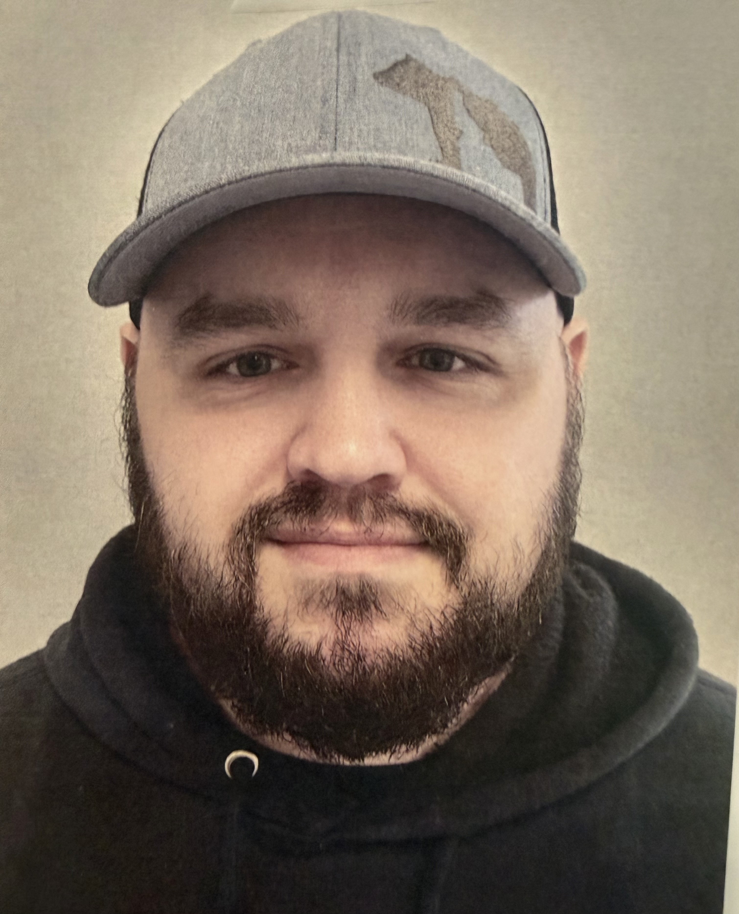

Computer Science Student | Tutor | Veteran
I am a Computer Science junior and President’s List student with a foundation built on technical discipline and leadership. Currently, I serve as a Computer Science Tutor, where I enjoy breaking down complex programming concepts for my peers.
My journey into tech is backed by years of high-stakes technical experience, ranging from aviation hydraulics in the U.S. Marine Corps to precision manufacturing at SEL, Seekins Precision, and CCI. I am passionate about applying my experience in C#, Python, and SQL to develop innovative software and contribute to the evolving field of AI.
This program uses hash tables to index and retrieve information about the various units and their subclasses using C++. I really enjoyed making this program as it felt like a culmination of all the C++ classes coming together to make a program that would be used in something I find interesting. It also taught me a lot about the debugging process and the importance of different test cases, as the program still functions weirdly when retrieving some units, which I get to continue improving upon.
View RepositoryWhile this was a final project for web development, it was great to use my learned skills throughout the semester and appy it to a website topic that I am interested in. After years of using websites, it felt great to finally make my own with different integrations of tools to make a fully accessible website.
View Repository